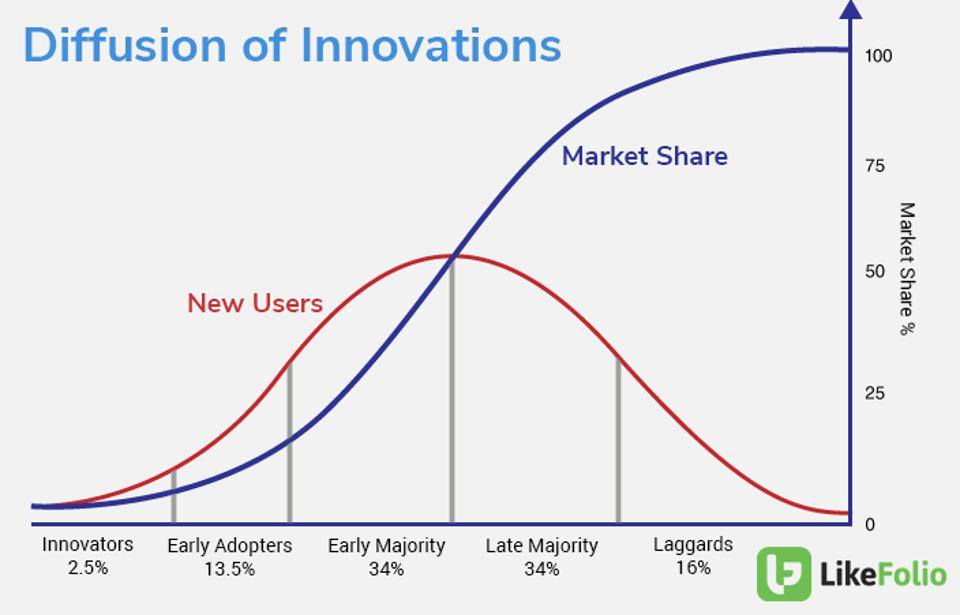

Backlinks
1 Types of Startup
3 Rules of looking at startups
- "People": make what people in the market need
- "Product": build a thing better than others
- "Passion": harvest some personal desire do a specific thing
Look at: Walt Disney, Elon Musk. What is their people, product, passions?
"There are so many ways for you to die as a startup. Every single thing has to go right for you to succeed."
2 Your Own Superpowers
Its easy to take the physical attributes and measure them. However, everybody has something uniquely different that's not necessarily physical.
"What are your most proud of in your resume?"
3 Work
The 10,000 hour thing is real. But you have to know how to apply the work.
That's 18 hours a day, for two years.
4 So how to Start a Startup?
4.1 People-Focused
<> People Goal
- Talk to 10 people in this domain you're interested in.
- Formulate your understanding + write it down.
- Talk to 10 more people, and confirm that you got what their problems are right. Then, ask what could be improved about their problem statement.
- Hypothesize potential products that could solve their problems
- Talk to 10 more people, ask if the hypothesis hold water, and if not, why not?
- Refine your product idea further, and tighten up a target segment.
- Talk to 10 people in your target segment, and get a few nods.
Q: Wait but that requires 40 people?
A: Yes. If you can't even find 30 people to talk about this stuff, your network either is lacking and you have to build that, OR your market is too small
Of course, by the end, in those 10, maybe 5 will be interested in the end and 2 of them will buy. But, if you have 30 people, and all 30 people LOOVE your solution, then you probably have a problem: you found an awesome need, but why the gosh darn has no one built the thing yet?
Once you are all done: "When you need more advise, ask for money. When you need money, ask for advise".
Therefore:
- You know exactly what your market segment is
- You know what their needs are
- You know what the industry looks like
You probably understand more about the market more than most of the people you interviewed in the end.
If you sell your thing too early, you will cut off the air supply to advise.
4.2 Product-Focused
<> Product Goal
Rule -1: DON'T BUILD TANGIBLE! BUILD A PAPER PROTOTYPE.

If you talked to like 10 people, the likelyhood of anybody that are willing to try stuff out is (2.5+12.5 = 15%), which is like 2 people.
- Build a PAPER prototype (or like Figma, but def not an app)
- Get feedback from 10 people IN THE RIGHT SEGMENT (this will be surprisingly hard)
- Improve the paper prototypes
- Get feedback from 10 people
- Improve the paper prototype
- Etc. etc. etc.
- When you are on your later rounds of feedback, look for those that want to use the product when it ships. "When are you going to ship this by the way?"
- Btw, you have a start up now!
4.3 Passion-Focused
IDKKKKKKK.
Lot's of open ended conversations across every domains. This is not easy to put into a neat little box.
- Formulate product hypotheses, and validate with domain experts
- Make small-scale product prototypes
- Do a lot of context-switching and have patience for longer-term exploration
5 So which model to pick?
Take the three models + your superpowers (what are you good at?) + Putting in the work => and then you have a good start
Don't let co-founder problems boggle over you. At the same time, don't hire and throw money at it until you have 2-3 independent people interested in your thing.